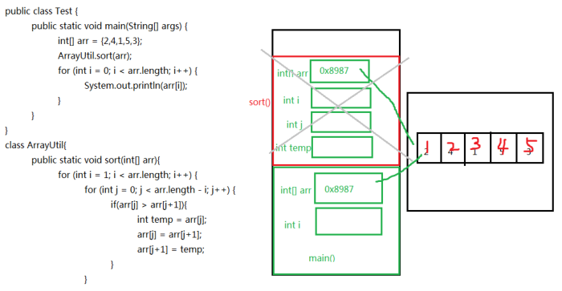
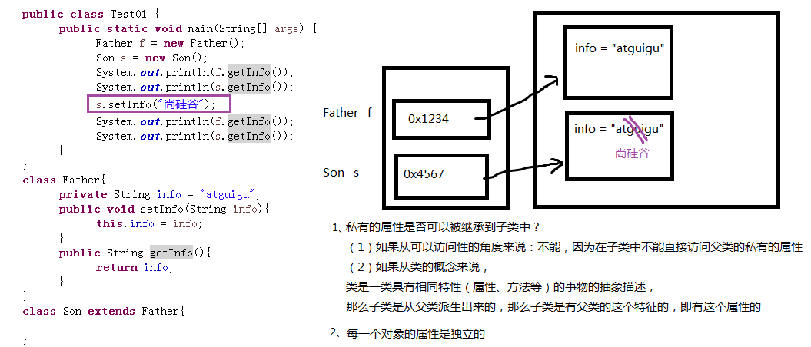

面向对象概述¶
1. 面向对象的三大特征¶
面向对象的语言中，包含了三大基本特征，即：
- 封装(Encapsulation）
- 继承(Inheritance)
-
多态(Polymorphism)
-
什么是对象？ 对象：是一个具有特定属性和行为特征的具体事物。
- 什么是类？ 类：是一类具有相同特征的事物的抽象描述，是一组相同属性和行为的对象的集合。
- 类与对象的关系 类是对一类事物的描述，是抽象的。 对象是一类事物的实例，是具体的。 类是对象的模板，对象是类的实体。
2. 类的定义¶
Java中类的定义，就是把现实中类的概念用Java语言描述。
Java中用class关键字定义一个类，并定义类的成员：成员变量（属性）和成员方法（行为）。
2.1 类的定义格式¶
public class 类名 {
//成员变量，描述这类事物的属性
//成员方法，描述这类事物的行为
}
- 成员变量：和以前定义变量几乎是一样的。只不过位置发生了改变。在类中，方法外，用于描述对象的属性特征。
- 成员方法：和以前写的main方法格式类似。只不过功能和形式更丰富了。在类中，方法外，用于描述对象的行为特征。
代码示例
//定义顾客类
public class Customer {
//成员变量,描述属性特征
String name;//姓名
int age;//年龄
int weight;//体重
//成员方法，描述行为特征
public void shopping(){
System.out.println("购物...");
}
}
3. 对象的内存分析¶
对象名中存储的是什么呢？答：对象地址(引用)
class Student{
}
public class TestStudent{
//Java程序的入口
public static void main(String[] args){
System.out.println(new Student());//Student@7852e922Student stu = new Student();
System.out.println(stu);//Student@4e25154f
int[] arr = new int[5];
System.out.println(arr);//[I@70dea4e
}
}
//Student和TestStudent没有位置要求，谁在上面谁在下面都可以
//但是如果TestStudent类的main中使用了Student类，那么要求编译时，这个Student已经写好了，不
写是不行的
//如果两个类都在一个.java源文件中，只能有一个类是public的
发现学生对象和数组对象类似，直接打印对象名和数组名都是显示“类型@对象的hashCode值"，所以说类、数组都是引用数据类型，引用数据类型的变量中存储的是对象的地址，或者说指向堆中对象的首地址。
那么像“Student@4e25154f”是对象的地址吗？不是，因为Java是对程序员隐藏内存地址的，不暴露内存地址信息，所以打印对象时不直接显示内存地址，而是JVM提取了对象描述信息给你现在，默认提取的是对象的运行时类型@代表对象唯一编码的hashCode值。

4. 包（Package）¶
4.1 包的作用¶
-
可以避免类重名：有了包之后，类的全名称就变为：包.类名
-
分类组织管理众多的类
例如：
- java.lang----包含一些Java语言的核心类，如String、Math、Integer、 System和Thread等，提供常用功能
- java.net----包含执行与网络相关的操作的类和接口。
- java.io ----包含能提供多种输入/输出功能的类。
- java.util----包含一些实用工具类，如集合框架类、日期时间、数组工具类Arrays，文本扫描仪
- Scanner，随机值产生工具Random。
- java.text----包含了一些java格式化相关的类
- java.sql和javax.sql----包含了java进行JDBC数据库编程的相关类/接口
-
java.awt和java.swing----包含了构成抽象窗口工具集（abstract window toolkits）的多个类，这些类被用来构建和管理应用程序的图形用户界面(GUI)。
-
可以控制某些类型或成员的可见范围
如果某个类型或者成员的权限修饰缺省的话，那么就仅限于本包使用
4.2 声明包语法格式¶
package 包名;
注意：
(1) 必须在源文件的代码首行
(2) 一个源文件只能有一个声明包的语句
包的命名规范和习惯：
（1）所有单词都小写，每一个单词之间使用.分割
（2）习惯用公司的域名倒置 例如：com.atguigu.xxx;
4.3 跨包使用类¶
前提：被使用的类或成员的权限修饰符是>缺省的，即可见的
- 使用类型的全名称
例如：java.util.Scanner input = new java.util.Scanner(System.in);
- 使用import 语句之后，代码中使用简名称
import语句告诉编译器到哪里去寻找类。
import语句的语法格式：
import 包.类名;
import 包.*;
import static 包.类名.静态成员; //后面再讲
注意：
- 使用java.lang包下的类，不需要import语句，就直接可以使用简名称
- import语句必须在package下面，class的上面
- 当使用两个不同包的同名类时，例如：java.util.Date和java.sql.Date。一个使用全名称，一个使用简名称
5. 类的描述¶
5.1 成员变量¶
5.1.1 变量的分类¶
根据定义位置不同分为：
- 局部变量：定义在方法体内或其他局部区域内的变量（之前所使用的都是main方法中定义的变量，为局部变量）。
- 成员变量：定义在类的成员位置，在方法体外，与方法（例如main方法）平行的位置。并且有修饰符修饰。
根据修饰的不同成员变量又分为：
-
类变量：或叫静态变量，有static修饰的成员变量。（上例中的country为类变量）
-
实例变量：没有static修饰的成员变量。
5.1.2 成员变量的声明¶
语法格式：
class 类名{
【修饰符】 数据类型 属性名; //属性有默认值
【修饰符】 数据类型 属性名 = 值; //属性有初始值
}
说明：常用修饰符有public、缺省、private、protected、final、static
数据类型可以是任意基本数据类型和引用数据类型。
属性名即变量名，符合标识符的命名规则和规范。
举例：
//定义一个中国人类
class Chinese{
public static String country;
public String name;
char gender = '男';//显式赋值
private int age;
}
5.1.3 成员变量的访问¶
- 实例变量的访问：
对象名.静态成员变量
- 类变量的访问：
类名.静态成员变量
对象名.静态成员变量（不推荐）
示例：
public class TestChinese {
public static void main(String[] args) {
//类名.静态成员变量
System.out.println(Chinese.country);
//错误，非静态成员变量必须通过对象.进行访问
// System.out.println(Chinese.name);
Chinese c1 = new Chinese();
//对象名.非静态成员变量
System.out.println(c1.name);
//静态的成员变量也可以通过对象.进行访问
//对象名.非静态成员变量
System.out.println(c1.country);
System.out.println(c1.gender);
}
}
class Chinese{
static String country;String name;
char gender = '男';
}
5.1.4 成员变量的特点¶
- 成员变量有默认初始值
- 类变量的值是所有对象共享的，而实例变量的值是每个对象独立的
public class TestChinese {
public static void main(String[] args) {
Chinese c1 = new Chinese();
Chinese c2 = new Chinese();
c1.name = "张三";
c2.name = "李四";
c2.gender = '女';
// c1.country = "中国";
Chinese.country = "中国";//推荐
System.out.println("c1.country = " + c1.country + ",c1.name = " +
c1.name + ",c1.gender = " + c1.gender);
System.out.println("c2.country = " + c2.country + ",c2.name = " +
c2.name + ",c2.gender = " + c2.gender);
}
}
class Chinese{
static String country;
String name;
char gender = '男';
}
5.1.5 成员变量的内存分析¶
以下面为例
class Test08FieldSave{
public static void main(String[] args){
Chinese c1 = new Chinese();
Chinese c2 = new Chinese();
c1.name = "张三";
c2.name = "李四";System.out.println(c1.country+“--”+c1.name);
System.out.println(c2.country+“--”+c2.name);
System.out.println("-------------------------");
//修改类变量值
c1.country = "中华人民共和国";
//修改实例变量
c1.name="张三丰";
System.out.println(c1.country+“--”+c1.name);
System.out.println(c2.country+“--”+c2.name);
System.out.println(Chinese.country);
}
}
class Chinese{
static String country = "中国";
String name;
}

5.1.6 成员变量与局部变量的区别¶
5.1.7 成员变量的赋值¶
成员变量有默认值,上面已经说过
显式赋值
public class Student{
public static final String COUNTRY = "中华人民共和国";
private static String school = "尚硅谷";
private String name;
private char gender = '男';
}
5.2 代码块¶
静态初始化块：在类初始化时由类加载器调用执行，每一个类的静态初始化只会执行一次，早于实例对象的创建。
实例初始化块：每次new实例对象时自动执行，每new一个对象，执行一次。
-
静态初始化块：为静态变量初始化¶
【修饰符】 class 类名{
static{
静态初始化
}
}
-
实例初始化块：为实例变量初始化¶
【修饰符】 class 类名{
{
实例初始化块
}
}
5.3 构造器¶
使用构造器，在new对象时由对象的创建者决定为当前对象的实例变量赋什么值。
注意：构造器只为实例变量初始化，不为静态类变量初始化
为实例变量初始化，再new对象时由对象的创建者决定为当前对象的实例变量赋什么值。
5.4 方法¶
成员变量是用来存储对象的数据信息的，那么如何表示对象的行为功能呢？就要通过方法来实现
5.4.1 方法的概念¶
方法也叫函数，是一个独立功能的定义，是一个类中最基本的功能单元。
把一个功能封装为方法的目的是，可以实现代码重用，从而简少代码量。
5.4.2 成员方法的分类¶
根据修饰不同方法主要分为两类：
实例方法：没有static修饰的方法，必须通过实例对象来调用。
静态方法：有static修饰的方法，也叫类方法，主要特点是可以由类名来调用。
5.4.3 方法的声明¶
-
方法声明的位置必须在类中方法外
-
语法格式¶
【修饰符】 返回值类型 方法名(【参数列表：参数类型1 参数名1,参数类型2 参数名, ...... 】)
{
方法体；
【return 返回值;】
}
-
格式说明：
-
- 修饰符： 修饰符后面详细讲，例如：public，static等都是修饰符
- 返回值类型： 表示方法运行的结果的数据类型，与”return 返回值“搭配使用
-
-
- 无返回值：void - 有返回值：可以是任意基本数据类型和引用数据类型
-
-
- 方法名：给方法起一个名字，要符合标识符的命名规则，尽量见名知意，能准确代表该方法功能的名字
- 参数列表：方法内部需要用到其他方法中的数据，需要通过参数传递的形式将数据传递过
- 来，可以是基本数据类型、引用数据类型、也可以没有参数，什么都不写
- 方法体：特定功能的代码
- return：结束方法，可以返回方法的运行结果
-
-
- 可以返回不同类型的数据，对应匹配的返回值类型。 - 如果方法无返回值，可以省去return，并且返回值类型为void
-
简单示例
public class Person {
public void hello(){
System.out.println("hello world");
}
}
5.4.4 方法的调用¶
方法必须先声明后使用，不调用不执行，调用一次执行一次。
- 实例方法的调用
对象名.实例方法(【实参列表】)
public class TestCircle {
public static void main(String[] args) {
Circle c1 = new Circle();
c1.radius = 1.2;
System.out.println("c1的面积：" + c1.area());//非静态方法只能通过"对象."进行访问
// System.out.println("c1的面积：" + Circle.area());
Circle c2 = new Circle();
c2.radius = 2.5;
System.out.println("c2的面积：" + c2.area());
}
}
class Circle{
double radius;
public double area() {
return Math.PI * radius * radius;
}
}
- 类方法（静态方法）的调用
类名.类方法(【实参列表】)
对象名.类方法(【实参列表】) （不推荐）
示例：
public class TestCount {
public static void main(String[] args) {
System.out.println(CountTools.max(4, 1));
//静态方法也可以通过“对象.”访问，就是麻烦点
CountTools c = new CountTools();
System.out.println(c.max(2, 5));
}
}
class CountTools{
static int max(int a, int b) {
return a > b ? a : b;
}
}
-
形参与实参的概念理解
-
- 形参：在定义方法时方法名后面括号中声明的变量称为形式参数（简称形参）即形参出现在方法定义时。
- 实参：调用方法时方法名后面括号中的使用的值/变量/表达式称为实际参数（简称实参）即实参出现在方法调用时。
-
方法调用的注意事项
-
- 调用方法时，实参的个数、类型、顺序必须要与形参列表一一对应
- 调用方法时，如果方法有返回值，可以用与返回值类型相同的变量接受或直接处理返回值结果，如果方法的返回值类型是void，不需要也不能接收和处理返回值结果。
5.4 本类中的成员变量和方法访问¶
直接用，不需要加“对象名."和"类名."
例外情况：静态方法中不能直接访问本类的非静态的成员变量和成员方法
5.5 方法调用内存分析¶
方法不调用不执行，调用一次执行一次，每次调用会在栈中有一个入栈动作，即给当前方法开辟一块独立的内存区域，用于存储当前方法的局部变量的值，当方法执行结束后，会释放该内存，称为出栈，如果方法有返回值，就会把结果返回调用处，如果没有返回值，就直接结束，回到调用处继续执行下一条指令。
栈结构特点：先进后出，后进先出。
5.5.1 示例一：¶
public class TestCount {
public static void main(String[] args) {
int a = 4;
int b = 2;
int m = CountTools.max(a, b));
}
}
class CountTools{
static int max(int a, int b) {
return a > b ? a : b;
}
}

5.5.2 示例二：¶
public class TestCircle {
public static void main(String[] args) {
Circle c1 = new Circle();
c1.radius = 1.2;
int area1 = c1.area();
Circle c2 = new Circle();
c2.radius = 2.5;
int area2 = c2.area();
}
}
class Circle{
double radius;
public double area() {
return Math.PI * radius * radius;
}
}

5.5.3 示例三：¶
public class Test {
public static void main(String[] args) {
int[] arr = {2,4,1,5,3};
ArrayUtil.sort(arr);
for (int i = 0; i < arr.length; i++) {
System.out.println(arr[i]);
}
}
}
class ArrayUtil{
public static void sort(int[] arr){
for (int i = 1; i < arr.length; i++) {
for (int j = 0; j < arr.length - i; j++) {
if(arr[j] > arr[j+1]){
int temp = arr[j];
arr[j] = arr[j+1];
arr[j+1] = temp;
}
}
}
}
}

5.6 方法参数的值传递机制¶
方法的参数传递机制：实参给形参赋值
- 方法的形参是基本数据类型时，形参值的改变不会影响实参；
- 方法的形参是引用数据类型时，形参地址值的改变不会影响实参，但是形参地址值里面的数据的改变会影响实参，例如，修改数组元素的值，或修改对象的属性值。
注意：String、Integer等特殊类型容易错
5.7 可变参数¶
在JDK1.5之后，如果我们定义一个方法时，此时某个形参的类型可以确定，但是形参的个数不确定，那
么我们可以使用可变参数。
格式： 【修饰符】 返回值类型 方法名(【非可变参数部分的形参列表,】参数类型... 形参名){ }
注意：
（1）一个方法最多只能有一个可变参数
（2）如果一个方法包含可变参数，那么可变参数必须是形参列表的最后一个
示例： 求n个整数的和¶
public class ChangeArgs {
public static void main(String[] args) {
int[] arr = { 1, 4, 62, 431, 2 };
int sum1 = getSum1(arr);
System.out.println(sum1);
int sum2 = getSum2(arr);
System.out.println(sum2);
int sum3 = getSum2(1, 4, 62, 431, 2);
System.out.println(sum3);
}
// 完成数组 所有元素的求和
// 原始写法
public static int getSum1(int[] arr) {
int sum = 0;
for (int i = 0; i < arr.length; i++) {
sum += arr[i];
}
return sum;
}
// 可变参数写法
public static int getSum2(int... arr) {
int sum = 0;
for (int i = 0; i < arr.length; i++) {
sum += arr[i];
}
return sum;
}
}
5.8 方法重载¶
方法重载：指在同一个类中，允许存在一个以上的同名方法，只要它们的参数列表不同即可，与修饰符和返回值类型无关。(方法签名不同)
参数列表不同：指的是参数个数不同，数据类型不同，数据类型顺序不同。
6. 类的初始化¶
- 类初始化的目的：为类中的静态变量进行赋值。
-
实际上，类初始化的过程时在调用一个()方法，而这个方法是编译器自动生成的。编译器会将如下两部分的所有代码，按顺序合并到类初始化()方法体中。
-
- 静态类成员变量的显式赋值语句
- 静态代码块中的语句
-
整个类初始化只会进行一次，如果子类初始化时，发现父类没有初始化，那么会先初始化父类。
6.1 示例¶
public class Test{
public static void main(String[] args){
Son.test();
System.out.println("-----------------------------");
Son.test();
}
}
class Father{
private static int a = getNumber();
static{
System.out.println("Father(1)");
}
private static int b = getNumber();
static{
System.out.println("Father(2)");
}public static int getNumber(){
System.out.println("Father:getNumber()");
return 1;
}
}
class Son extends Father{
private static int a = getNumber();
static{
System.out.println("Son(1)");
}
private static int b = getNumber();
static{
System.out.println("Son(2)");
}
public static int getNumber(){
System.out.println("Son:getNumber()");
return 1;
}
public static void test(){
System.out.println("Son:test()");
}
}
运行结果:
Father:getNumber()
Father(1)
Father:getNumber()
Father(2)
Son:getNumber()
Son(1)
Son:getNumber()
Son(2)
Son:test()
-----------------------------
Son:test()
7. 实例初始化¶
- 实例初始化的目的：为类中非静态成员变量赋值
- 实际上我们编写的代码在编译时，会自动处理代码，整理出一个()的类初始化方法，还会整理出一个或多个的(...)实例初始化方法。一个类有几个实例初始化方法，由这个类有几个构造器决定。
实例初始化方法的方法体，由四部分构成：
（1）super()或super(实参列表) 这里选择哪个，看原来构造器首行是哪句，没写，默认就是super()
（2）非静态实例变量的显示赋值语句
（3）非静态代码块
（4）对应构造器中的代码
特别说明：其中（2）和（3）是按顺序合并的，（1）一定在最前面（4）一定在最后面
-
执行特点：
-
- 创建对象时，才会执行
- 每new一个对象，都会完成该对象的实例初始化
- 调用哪个构造器，就是执行它对应的实例初始化方法
- 创建子类对象时，父类对应的实例初始化会被先执行，执行父类哪个实例初始化方法，看用super()还是super(实参列表)
7.1 示例代码1：单个类¶
public class Test{
public static void main(String[] args){
Father f1 = new Father();
Father f2 = new Father("atguigu");
}
}
class Father{
private int a = getNumber();
private String info;
{
System.out.println("Father(1)");
}
Father(){
System.out.println("Father()无参构造");
}
Father(String info){
this.info = info;
System.out.println("Father(info)有参构造");
}
private int b = getNumber();
{
System.out.println("Father(2)");
}
public int getNumber(){
System.out.println("Father:getNumber()");
return 1;
}
}
// 运行结果：
// Father:getNumber()
// Father(1)
// Father:getNumber()
// Father(2)
// Father()无参构造
// Father:getNumber()
// Father(1)
// Father:getNumber()
// Father(2)
// Father(info)有参构造
7.2 示例代码2：父子类¶
public class Test{
public static void main(String[] args){
Son s1 = new Son();
System.out.println("-----------------------------");
Son s2 = new Son("atguigu");
}
}
class Father{
private int a = getNumber();
private String info;
{
System.out.println("Father(1)");
}
Father(){
System.out.println("Father()无参构造");
}
Father(String info){
this.info = info;
System.out.println("Father(info)有参构造");
}
private int b = getNumber();
{
System.out.println("Father(2)");
}
public static int getNumber(){
System.out.println("Father:getNumber()");
return 1;
}
}
class Son extends Father{
private int a = getNumber();
{
System.out.println("Son(1)");
}
private int b = getNumber();
{
System.out.println("Son(2)");}
public Son(){
System.out.println("Son()：无参构造");
}
public Son(String info){
super(info);
System.out.println("Son(info)：有参构造");
}
public static int getNumber(){
System.out.println("Son:getNumber()");
return 1;
}
}
运行结果：
Father:getNumber()
Father(1)
Father:getNumber()
Father(2)
Father()无参构造
Son:getNumber()
Son(1)
Son:getNumber()
Son(2)
Son()：无参构造
-----------------------------
Father:getNumber()
Father(1)
Father:getNumber()
Father(2)
Father(info)有参构造
Son:getNumber()
Son(1)
Son:getNumber()
Son(2)
Son(info)：有参构造
7.3 示例代码3：父子类，方法有重写¶
public class Test{
public static void main(String[] args){
Son s1 = new Son();
System.out.println("-----------------------------");
Son s2 = new Son("atguigu");
}
}
class Father{
private int a = getNumber();
private String info;
{
System.out.println("Father(1)");
}
Father(){
System.out.println("Father()无参构造");
}
Father(String info){this.info = info;
System.out.println("Father(info)有参构造");
}
private int b = getNumber();
{
System.out.println("Father(2)");
}
public int getNumber(){
System.out.println("Father:getNumber()");
return 1;
}
}
class Son extends Father{
private int a = getNumber();
{
System.out.println("Son(1)");
}
private int b = getNumber();
{
System.out.println("Son(2)");
}
public Son(){
System.out.println("Son()：无参构造");
}
public Son(String info){
super(info);
System.out.println("Son(info)：有参构造");
}
public int getNumber(){
System.out.println("Son:getNumber()");
return 1;
}
}
运行结果：
Son:getNumber() //子类重写getNumber()方法，那么创建子类的对象，就是调用子类的
getNumber()方法，因为当前对象this是子类的对象。
Father(1)
Son:getNumber()
Father(2)
Father()无参构造
Son:getNumber()
Son(1)
Son:getNumber()
Son(2)
Son()：无参构造
-----------------------------
Son:getNumber()
Father(1)
Son:getNumber()
Father(2)
Father(info)有参构造
Son:getNumber()
Son(1)
Son:getNumber()
Son(2)
Son(info)：有参构造
8. 类初始化与实例初始化比较¶
- 类初始化肯定优先于实例初始化。
- 类初始化只做一次。
- 实例初始化是每次创建对象都要进行。
public class Test{
public static void main(String[] args){
Son s1 = new Son();
System.out.println("----------------------------");
Son s2 = new Son();
}
}
class Father{
static{
System.out.println("Father:static");
}
{
System.out.println("Father:not_static");
}
Father(){
System.out.println("Father()无参构造");
}
}
class Son extends Father{
static{
System.out.println("Son:static");
}
{
System.out.println("Son:not_static");
}
Son(){
System.out.println("Son()无参构造");
}
}
运行结果：
Father:static
Son:static
Father:not_static
Father()无参构造
Son:not_static
Son()无参构造
----------------------------
Father:not_static
Father()无参构造
Son:not_static
Son()无参构造
9. 构造器（Constructor)¶
9.1 构造器概述¶
构造器的作用: 用于创建并初始化对象
注意：构造器只为实例变量初始化，不为静态类变量初始化
9.2 构造器的语法格式¶
构造器又称为构造方法或构造函数，那是因为它长的很像方法。但是和方法还有有所区别的。
【修饰符】 构造器名(){
// 实例初始化代码
}
【修饰符】 构造器名(参数列表){
// 实例初始化代码
}
代码如下：
public class Student {
private String name;
private int age;
// 无参构造
public Student() {}
// 有参构造
public Student(String name,int age) {
this.name = name;
this.age = age;
}
public String getName() {
return name;
}
public void setName(String name) {
this.name = name;
}
public int getAge() {
return age;
}
public void setAge(int age) {
this.age = age;
}
}
注意事项：
构造器名必须与它所在的类名必须相同。
它没有返回值，所以不需要返回值类型，甚至不需要void
如果你不提供构造器，系统会给出默认无参数构造器，并且该构造器的修饰符默认与类的修饰符相同
如果你提供了构造器，系统将不再提供无参数构造器，除非你自己定义。
构造器是可以重载的，既可以定义参数，也可以不定义参数。
\6. 构造器的修饰符只能是权限修饰符，不能被其他任何修饰
9.3 属性赋值小结¶
截止到目前，我们讲了很多位置都可以对类的属性赋值。现总结这几个置，并指明赋值的先后顺序。 赋值的位置及先后顺序：
① 默认初始化
② 显式初始化
③ 构造器中初始化
④ 通过“对象 .属性“或对象 .方法”的式赋值
9.4 this调用构造器¶
构造器重载时，可以在一个构造方法中调用另一构造方法，以简化代码。
格式：this（参数列表）;
public Employee(){
}
public Employee(String id){
this.id=id;
}
public Employee(String id, String name){
this(id);//this调用一个参数的构造器
this.name = name;
}
public Employee(String id, String name, double salary, char gender){
this(id,name);//this调用2个参数的构造器
this.salary = salary;
this.gender = gender;
}
注意：
this调用构造器的语句，只能构造器中第一行位置。
10. 标准的JavaBean¶
JavaBean 是 Java语言编写类的一种标准规范。符合 JavaBean 的类，要求：
（1）类必须是具体的和公共的，
（2）并且具有无参数的构造方法，
（3）成员变量私有化，并提供用来操作成员变量的 set 和 get 方法。
（比较理解POJO : Plain Ordinary Java Object，主要承载数据，不涉及业务逻辑）
public class ClassName{
//成员变量
//构造方法
//无参构造方法【必须】
//有参构造方法【建议】
//getXxx()
//setXxx()
//其他成员方法
}
11. 父子类构造器与 this¶
情况1：子类中重写了父类的方法，父类构造器中使用了该方法
结果：调用子类对象重写的方法
说明：子类构造对象时，会调用父类构造器，此时父类构造器中的this为子类
class Father {
public Father() {
this.printSth();
}
public void printSth() {
System.out.println("父类构造器调用print方法");
}
}
class Son extends Father {
public Son() {
super();
}
public void printSth() {
System.out.println("子类构造器调用print方法");
}
}
// 输出
子类构造器调用print方法
子类创建对象时，调用父类构造器中的this为子类
情况2：子类未重写父类构造器调用的方法
结果：调用父类对象的方法
class Father {
public Father() {
this.printSth();
}
public void printSth() {
System.out.println("父类构造器调用print方法");
}
}
class Son extends Father {
public Son() {
super();
}
// public void printSth() {
// System.out.println("子类构造器调用print方法");
// }
}
// 输出
// 父类构造器调用print方法
12. 封装¶
随着我们系统越来越复杂，类会越来越多，那么类之间的访问边界必须把握好，面向对象的开发原则要遵循“高内聚、低耦合”，而“高内聚，低耦合”的体现之一：
- 高内聚：类的内部数据操作细节自己完成，不允许外部干涉；
- 低耦合：仅对外暴露少量的方法用于使用
隐藏对象内部的复杂性，只对外公开简单的接口。便于外界调用，从而提高系统的可扩展性、可维护性。通俗的讲，把该隐藏的隐藏起来，该暴露的暴露出来。这就是封装性的设计思想。
通俗的讲，封装就是把该隐藏的隐藏起来，该暴露的暴露出来。那么暴露的程度如何控制呢？就是依赖访问控制修饰符，也称为权限修饰符来控制。
12.1 权限修饰符¶
权限修饰符共有4种，分别为public，protected、缺省、private；权限修饰符可以使得数据在一定范围内可见或者隐藏。

12.2 封装的实现¶
成员变量（field）私有化之后，提供标准的get/set方法，我们把这种成员变量也称为属性（property）。或者可以说只要能通过get/set操作的就是事物的属性，哪怕它没有对应的成员变量。
-
成员变量封装的目的
-
- 隐藏类的实现细节
- 让使用者只能通过事先预定的方法来访问数据，从而可以在该方法里面加入控制逻辑，限制对成员变量的不合理访问。还可以进行数据检查，从而有利于保证对象信息的完整性。
- 便于修改，提高代码的可维护性。主要说的是隐藏的部分，在内部修改了，如果其对外可以的访问方式不变的话，外部根本感觉不到它的修改。例如：Java8->Java9，String从char[]转为byte[]内部实现，而对外的方法不变，我们使用者根本感觉不到它内部的修改。
-
实现步骤
使用 private 修饰成员变量: private 数据类型 变量名;
public class Chinese {
private static String country;
private String name;
private int age;
private boolean marry;
}
提供 getXxx 方法 / setXxx 方法，可以访问成员变量，代码如下：
public class Chinese {
private static String country;
private String name;
private int age;
private boolean marry;
public static void setCountry(String c){
country = c;
}
public static String getCountry(){
return country;
}
public void setName(String n) {
name = n;
}
public String getName() {
return name;
}
public void setAge(int a) {
age = a;
}
public int getAge() {
return age;
}
public void setMarry(boolean m){
marry = m;}
public boolean isMarry(){
return marry;
}
}
当局部变量与类变量（静态成员变量）同名时，在类变量前面加“类名."；
当局部变量与实例变量（非静态成员变量）同名时，在实例变量前面加“this.”
13. 继承¶
13.1 Java中的继承¶
Java中有父类、子类的概念，类似生活中的父子关系，父类中的一些属性和方法可以被子类继承下来使用，不再需要重复定义。
多个类中存在相同属性和行为时，将这些内容抽取到单独一个类中，那么多个类中无需再定义这些属性和行为，只需要和抽取出来的类构成某种关系。如图所示：

其中，继承的类可以称为子类，也叫派生类；多个类抽取出来的这个类称为父类、超类（superclass）或者基类。
继承描述的是事物之间的所属关系，这种关系是： is-a 的关系。例如，图中猫属于动物，狗也属于动物。可见，父类更通用，子类更具体。我们通过继承，可以使多种事物之间形成一种关系体系。
13.2 继承的好处¶
-
提高代码的复用性。
-
提高代码的扩展性。
-
类与类之间产生了关系，是学习多态的前提。
13.3 继承的格式¶
通过 extends 关键字，可以声明一个子类继承另外一个父类，定义格式如下：
【修饰符】 class 父类 {
...
}
【修饰符】 class 子类 extends 父类 {
...
}
13.4 继承中成员变量的特点¶
子类可以继承父类的所有属性和方法，并直接使用（私有的例外）
13.4.1 父类的私有属性（private）¶
子类继承父类的所有的属性，但是私有的属性不能直接访问（也可以理解为私有的属性不能被继承，官方文档中的说法）
子类不能直接进行访问父类的私有属性，但可以通过继承的getter/setter方法进行访问。如图所示：

示例代码如下：
/*
* 定义动物类Animal，做为父类
*/
class Animal {
// 定义name属性
private String name;
// 定义age属性
public int age;
// 定义动物的吃东西方法
public void eat() {
System.out.println(age + "岁的" + name + "在吃东西");
}
}
/*
* 定义猫类Cat 继承 动物类Animal
*/
class Cat extends Animal {
// 定义一个猫抓老鼠的方法catchMouse
public void catchMouse() {
System.out.println("抓老鼠");
}
}
/*
* 定义测试类
*/
public class ExtendDemo01 {
public static void main(String[] args) {
// 创建一个猫类对象
Cat cat = new Cat()；
// 为该猫类对象的name属性进行赋值
//cat.name = "Tom";// 编译报错
// 为该猫类对象的age属性进行赋值
cat.age = 2;
// 调用该猫的catchMouse()方法
cat.catchMouse();
// 调用该猫继承来的eat()方法
cat.eat();
}
}
13.4.2 父子类成员变量重名（初始super关键字）¶
父类的成员变量会被子类继承，并可以直接使用，也可以在子类中定义同名的成员变量，这样会隐藏掉父类的成员变量（不建议）。
(也可以理解为就近访问-就近原则）。如果还想在子类中访问父类的成员变量，可以使用关键字super。
super用于在当前类中访问其父类的成员，使用格式：super.父类成员变量名
示例父类代码：
public class Father {
public int i=1;
private int j=1;
public int k=1;
public int getJ() {
return j;
}
public void setJ(int j) {
this.j = j;
}
}
子类代码：
public class Son extends Father{
public int i=2;
private int j=2;
public int m=2;
}
现在想要在子类Son中声明一个test()方法，并打印这些所有变量的值
public class Son extends Father{
public int i=2;
private int j=2;
public int m=2;
public void test() {
System.out.println("父类继承的i：" + super.i);
System.out.println("子类的i：" +i);
// System.out.println(super.j);
System.out.println("父类继承的j：" +getJ());
System.out.println("子类的j：" +j);
System.out.println("父类继承的k：" +k);
System.out.println("子类的m：" +m);
}
}
14. 继承中的构造方法¶
当类之间产生了关系，其中各类中的构造方法，又产生了哪些影响呢？
首先我们要回忆两个事情，构造方法的定义格式和作用。
- 构造方法的名字是与类名一致的。
所以子类是无法继承父类构造方法的。
-
构造方法的作用是初始化实例变量的，而子类又会从父类继承所有成员变量
-
- 所以子类的初始化过程中，必须先执行父类的初始化动作。子类的构造方法中默认有一个super() ，表示调用父类的实例初始化方法，父类成员变量初始化后，才可以给子类使用。
子类对象实例化过程中必须先完成从父类继承的成员变量的实例初始化，这个过程是通过调用父类的构造方法来完成的。
也就是说子类的构造方法中至少有一个构造方法显示或隐式的通过super关键字调用了父类的某一个构
造方法，否则编译失败。
- super()：表示调用父类的无参实例初始化方法，要求父类必须有无参构造，而且可以省略不写；
- super(实参列表)：表示调用父类的有参实例初始化方法，当父类没有无参构造时，子类的构造器首行必须写super(实参列表)来明确调用父类的哪个有参构造（其实是调用该构造器对应的实例初始方法）
- super()和super(实参列表)都只能出现在子类构造器的首行
强调说明
虽然创建子类对象时，调用了父类的构造器，但是自始至终就创建过一个对象，即为new的子类对象。
15. 继承的单继承限制¶
Java只支持单继承，不支持多继承。
//一个类只能有一个父类，不可以有多个父类。
class C extends A{} //ok
class C extends A，B... //error
Java支持多层继承(继承体系)。
class A{}
class B extends A{}
class C extends B{}
子类和父类是一种相对的概念。
例如：B类对于A来说是子类，但是对于C类来说是父类
一个父类可以同时拥有多个子类
16. 方法重写（Override）¶
方法重写：子类中定义与父类中相同的方法，一般方法体不同，用于改造并覆盖父类的方法。
具体要求：
- 必须保证父子类之间方法的名称相同，参数列表也相同。
- 子类方法的返回值类型必须与父类方法的返回值类型相同或者为父类方法返回值类型的子类类型。
- 子类方法的访问权限必须不能小于父类方法的访问权限。（public > protected > 缺省 > private）
- 子类方法 抛出的异常不能大于父被重写的异常（异常后面再讲）
注意事项：
静态方法不能被重写，方法重写指的是实例方法重写，静态方法属于类的方法不能被重写，而是隐藏。
私有等在子类中不可见的方法不能被重写
final方法不能被重写
17. this和super关键字¶
17.1 this关键字¶
this的含义: this代表当前对象的引用
17.1.1 this使用位置:¶
- this在实例初始化相关的代码块和构造器中：表示正在创建的那个实例对象，即正在new谁，
- this就代表谁
- this在非静态实例方法中：表示调用该方法的对象，即谁在调用，this就代表谁。
- this不能出现在静态代码块和静态方法中
17.1.2 this使用格式¶
-
this.成员变量名
-
- 当方法的局部变量与当前对象的成员变量重名时，就可以在成员变量前面加this.，如果没有重名问题，就可以省略this.
- this.成员变量会先从本类声明的成员变量列表中查找，如果未找到，会去从父类继承的在子类中仍然可见的成员变量列表中查找
-
this.成员方法
-
- 调用当前对象的成员方法时，都可以加"this."，也可以省略，实际开发中都省略
- 当前对象的成员方法，先从本类声明的成员方法列表中查找，如果未找到，会去从父类继承的在子类中仍然可见的成员方法列表中查找
-
this()或this(实参列表)只能调用本类的其他构造器
-
- 必须在构造器的首行
- 如果一个类中声明了n个构造器，则最多有 n - 1个构造器中使用了"this(【实参列表】)"，否则会发生递归调用死循环
17.2 super关键字¶
17.2.1 super的含义¶
super是用于在当前类中访问父类的一个特殊关键字，不是对象的引用。（区别this ：super不能单独使用赋值给一个变量）
17.2.2 super使用的前提¶
- 通过super引用父类的xx，都是在子类中仍然可见的
- 不能在静态代码块和静态方法中使用super
17.2.3 super的使用格式¶
- super.成员变量
在子类中访问父类的成员变量，特别是当子类的成员变量与父类的成员变量重名时。

- super.成员方法
##### 在子类中调用父类的成员方法，特别是当子类重写了父类的成员方法时
class Person {
public void baseMethod(){
System.out.println("show me the money");
}
}
class Student extends Person{
public void showSth(){
super.baseMethod(); // 调用基类的成员方法
}
}
- super()或super(实参列表)
##### 在子类的构造器首行，用于表示调用父类的哪个实例初始化方法
注意: 由于super() 和 this() 都必须是在构造方法的第一行，所以不能同时出现。
18. 就近原则和追根溯源原则¶
在继承关系中，如果要访问变量或方法，通常遵循就近原则和追根溯源原则，即先在调用位置最近的位
置查找变量或方法，如果没有则去父类找查找，找不到则报错。
18.1 找变量¶
-
没有super和this
-
- 在构造器、代码块、方法中如果出现使用某个变量，先查看是否是当前块声明的局部变量，
- 如果不是局部变量，先从当前执行代码的本类去找成员变量
- 如果从当前执行代码的本类中没有找到，会往上找父类的（非private，跨包还不能是缺省
- 的）
-
this ：代表当前对象
通过this找成员变量时，先从当前执行代码的本类中找，没有的会往上找父类的（非private，跨包还不能是缺省的）。
-
super ：代表父类的
-
- 通过super找成员变量，直接从当前执行代码所在类的父类找
- super()或super(实参列表)只能从直接父类找
- 通过super只能访问父类在子类中可见的（非private，跨包还不能是缺省的）
注意：super和this都不能出现在静态方法和静态代码块中，因为super和this都是存在与对象中的
18.2 找方法¶
- 没有super和this
先从当前对象（调用方法的对象）的本类找，如果没有，再从直接父类找，再没有，继续往上追溯
- this
先从当前对象（调用方法的对象）的本类找，如果没有，再从父类继承的可见的方法列表中查找
- super
直接从当前对象（调用方法的对象）的父类继承的可见的方法列表中查找
多态
19. 多态简述¶
生活中：一个事物在不同的条件下呈现不同的特征状态，如水在100度下呈液态，100度以上呈气态。
19.1 Java中的多态¶
19.1.1 书写格式¶
父类类型 变量名 = 子类对象；
Ainmal a=new Dog();
编译期a是个动物，运行时a是个狗；new 个Dog，a就是狗，new个Cat，a就是猫
代码如下:
public class Test2 {
public static void main(String[] args) {
Animal a=new Animal();
a.eat();
Dog d=new Dog();
d.eat();
System.out.println("----------------");
//多态写法：父类的引用指向子类的对象。
Animal a1=new Dog();//狗也是一个动物
a1.eat();//运行时动态的调用了Dog的eat方法
Animal a2=new Cat();//猫也是一个动物
a2.eat();//运行时调用Cat的eat方法
}
}
19.2 多态的理解¶
引用类型变量在编译期呈现左边父类的行为特征，运行时呈现右边创建的不同子类对象的行为特征。
即：编译看左边，运行看右边。
public class Test {
public static void main(String[] args) {
// 多态形式，创建对象
Animal a1 = new Cat();
// 调用的是 Cat 的 eat
a1.eat();
//a1.catchMouse();//错误，遍看左边，catchMouse()是子类特有的方法，左边父类中没有，编译失败
// 多态形式，创建对象Animal a2 = new Dog();
// 调用的是 Dog 的 eat
a2.eat();
}
}
注意：属性没有多态一说，在编译器即确定下来（左边的类型）
19.3 多态的前提¶
- 有继承关系
- 有方法重写
如果没有方法重写，运行时调用子类的方法，实际还是调用的从父类继承的方法，不具有多态性。
19.4 多态的好处¶
- 提高程序的扩展性（参考引入案例分析）
- 降低类与类直接耦合度（参考引入案例分析）
20. 多态的应用¶
20.1 多态应用在形参实参¶
父类类型作为方法形式参数，子类对象为实参。
代码如下：
public class Test01 {
public static void main(String[] args) {
showAnimalEat(new Dog()); //形参 Animal a,实参new Dog()
//实参给形参赋值 Animal a = new Dog() 多态引用
showAnimalEat(new Cat());//形参 Animal a,实参new Cat()
//实参给形参赋值 Animal a = new Cat() 多态引用
}
/*
* 设计一个方法，可以查看所有动物的吃的行为
* 关注的是所有动物的共同特征：eat()
* 所以形参，设计为父类的类型
* 此时不关注子类特有的方法
*/
public static void showAnimalEat (Animal a){
a.eat();
// a.catchMouse();//错误，因为a现在编译时类型是Animal，只能看到父类中有的方法
}
}
20.2 多态应用在数组¶
数组元素类型声明为父类类型，实际存储的是子类对象
public class Test02 {
public static void main(String[] args) {
/*
* 声明一个数组，可以装各种动物的对象，看它们吃东西的样子*/
Animal[] arr = new Animal[2]; //此时不是new Animal的对象，而是new Animal[]的数组对象
//在堆中开辟了长度为5的数组空间，用来装Animal或它子类对象的地址
arr[0] = new Cat();//多态引用 左边arr[0] 是Animal类型，右边是new Cat()
//把Cat对象，赋值给Animal类型的变量
arr[1] = new Dog();
for (int i = 0; i < arr.length; i++) {
arr[i].eat();
// arr[i].catchMouse();错误，因为arr[i]现在编译时类型是Animal，只能看到父类中有的方法
}
}
}
20.3 多态应用在返回值¶
方法的返回值类型声明为父类的类型，实际返回值是子类对象
public class Test03 {
public static void main(String[] args) {
Animal c = buy("猫咪");
System.out.println(c.getClass());
c.eat();
}
/*
* 设计一个方法，可以购买各种动物的对象，此时不确定是那种具体的动物
*
* 返回值类型是父类的对象
*
* 多态体现在 返回值类型 Animal ，实际返回的对象是子类的new Cat()，或new Dog()
*/
public static Animal buy(String name){
if("猫咪".equals(name)){
return new Cat();
}else if("小狗".equals(name)){
return new Dog();
}
return null;
}
}
21. 向上转型与向下转型¶
首先，一个对象在new的时候创建是哪个类型的对象，它从头至尾都不会变。即这个对象的运行时类型，本质的类型用于不会变。这个和基本数据类型的转换是不同的。
但是，把这个对象赋值给不同类型的变量时，这些变量的编译时类型却不同。
class Animal {
void eat(){
System.out.println("~~~");
}
}
class Cat extends Animal {
public void eat() {
System.out.println("吃鱼");
}
public void catchMouse() {
System.out.println("抓老鼠");
}
}
class Dog extends Animal {
public void eat() {
System.out.println("吃骨头");
}
public void watchHouse() {
System.out.println("看家");
}
}
class Test{
public static void main(String[] args){
Cat a = new Cat();//a编译时类型是Cat
Animal b = a;//b编译时类型是Animal
Object c = a;//c编译时类型是Object
//运行时类型
System.out.println(a.getClass());
System.out.println(b.getClass());
System.out.println(c.getClass());
//以上输出都一样，都是Cat类型
//a,b,c的编译时类型不同
//通过a能调用Cat中所有方法，包括从父类继承的，包括自己扩展的
//通过b只能调用Animal类及它的父类有的方法，不能调用Cat扩展的方法
//通过c只能调用Object类才有的方法
}
}
为什么要类型转换呢？
因为多态，就一定会有把子类对象赋值给父类变量的时候，这个时候，在编译期间，就会出现类型转换
的现象。
但是，使用父类变量接收了子类对象之后，我们就不能调用子类拥有，而父类没有的方法了。这也是多
态给我们带来的一点"小麻烦"。所以，想要调用子类特有的方法，必须做类型转换。
-
向上转型：当左边的变量的类型（父类） > 右边对象/变量的类型（子类），我们就称为向上转型
-
- 此时，编译时按照左边变量的类型处理，就只能调用父类中有的变量和方法，不能调用子类
- 特有的变量和方法了
- 但是，运行时，仍然是对象本身的类型
- 此时，一定是安全的，而且也是自动完成的
-
向下转型：当左边的变量的类型（子类）<右边对象/变量的类型（父类），我们就称为向下转型
- 此时，编译时按照左边变量的类型处理，就可以调用子类特有的变量和方法了
- 但是，运行时，仍然是对象本身的类型
- 此时，不一定是安全的，需要使用(类型)进行强制类型转换
- 不是所有通过编译的向下转型都是正确的，可能会发生ClassCastException，为了安全，可以通过isInstanceof关键字进行判断
示例代码：
public class Test {
public static void main(String[] args) {
// 向上转型
Animal a = new Cat();
a.eat(); // 调用的是 Cat 的 eat// 向下转型
Cat c = (Cat)a;
c.catchMouse(); // 调用的是 Cat 的 catchMouse
// 向下转型
//Dog d = (Dog)a; //这段代码可以通过编译，但是运行时，却报出了ClassCastException
//这是因为，明明创建了Cat类型对象，运行时，当然不能转换成Dog对象的。这两个类型并没有任何继承关系， //不符合类型转换的定义。
//d.watchHouse(); // 调用的是 Dog 的 watchHouse
Animal a2 = new Animal();
// Dog d2 = (Dog)a2;//这段代码可以通过编译，但是运行时，却报出了ClassCastException
// d2.watchHouse(); // 调用的是 Dog 的 watchHouse
}
}
为了避免ClassCastException的发生，Java提供了 instanceof 关键字，给引用变量做类型的校验，只要用instanceof判断返回true的，那么强转为该类型就一定是安全的，不会报ClassCastException异常。
- 对象/变量的编译时类型 与 instanceof后面数据类型是直系亲属关系才可以比较
- 对象/变量的运行时类型<= instanceof后面数据类型，才为true
22. Java类的初始化顺序¶
对于静态变量、静态初始化块、变量、初始化块、构造器，它们的初始化顺序依次是
静态变量、静态初始化块 > 变量、初始化块 >构造器。
初始化顺序图示：

22.1 属性赋值的顺序¶
- 默认初始化
- 显式初始化
- 构造器初始化
- 使用 . 或 get/set方法访问
23. 类创建过程案例¶
第1题¶
考核知识点：属性与多态无关
package com.atguigu.test01;
public class Test01 {
public static void main(String[] args) {
A a = new B();
System.out.println(a.num);
System.out.println(((B)a).num);
System.out.println(((A)((B)a)).num);
System.out.println("-------------------");
B b = new B();
System.out.println(b.num);
System.out.println(((A)b).num);
System.out.println(((B)((A)b)).num);
}
}
class A{
int num = 1;
}
class B extends A{
int num = 2;
}
/*运行结果：
1
2
1
---------------
2
1
2
*/
多态性现象：编译时类型与运行时类型不一致
但是多态性是针对方法来说，方法有动态绑定一说。
属性没有多态性。属性都是按照编译时类型处理的。
第2题¶
考核知识点：实例初始化方法，属性与多态无关
package com.atguigu.test02;
public class Test02 {
public static void main(String[] args) {
Father f = new Son();
System.out.println(f.x);
}
}
class Father{
int x = 10;
public Father(){
this.print();
x = 20;
}
public void print(){
System.out.println("Father.x = " + x);
}
}
class Son extends Father{
int x = 30;
public Son(){
this.print();
x = 40;
}
public void print(){
System.out.println("Son.x = " + x);
}
}
/* 运行结果：
Son.x = 0
Son.x = 30
20
*/
分析：
\1. 准备阶段，所有属性默认赋值为0
\2. 子类隐式调用父类构造器，此时父类成员变量已完成显式赋值，但子类成员变量尚未显式赋值，
父类中的this依旧为子类，因此调用子类的print方法，打印默认值 Son.x = 0
\3. 子类成员初始化完毕后（显式赋值），进入子类构造器逻辑，打印出此时子类的x值 Son.x = 30
父类构造器中的this代表的是正在创建的子类对象

第3题¶
考核知识点：多态，重写，实例初始化过程
package day10;
public class Test03 {
public static void main(String[] args) {
Base b2 = new Sub();
}
}
class Base {
Base() {
method(100); //等价于 this.method(100)
}
public void method(int i) {
System.out.println("base : " + i);
}
}
class Sub extends Base {
Sub() {
super.method(70);
}
public void method(int j) {
System.out.println("sub : " + j);
}
}
/*运行结果：
sub : 100
base : 70
*/
分析：
子类在调用父类的构造器时，父类构造器调用了method，等价于this.method，
而this代表的时子类，因此调用了子类的method方法，所以才会打印 sub：100
之后子类构造器显式调用了父类的method方法，并传入70，因此打印 base：70
第4题（属性调用，向上转型）¶
考核知识点：多态、重载、重写
public class Test04 {
public static void main(String[] args) {
A a1 = new A();
A a2 = new B();
B b = new B();
C c = new C();
D d = new D();
System.out.println("(1)" + a1.show(b));
System.out.println("(2)" + a2.show(d));
System.out.println("(3)" + b.show(c));
System.out.println("(4)" + b.show(d));
A a2 = new B();
System.out.println("(2)" + a2.show(d)); // B and A
}
}
class A{
public String show(D obj){
return ("A and D");
}
public String show(A obj){
return "A and A";
}
}
class B extends A{
public String show(B obj){
return "B and B";
}
public String show(A obj){
return "B and A";
}
}
class C extends B{
}
class D extends B{
}
/*运行结果
(1)A and A
(2)A and D
(3)B and B
(4)A and D
*/
分析：
a1.show(b)); // A and A // A类没有B类型参数的方法，因此B参数向上转型，变成A类型
a2.show(d)); // A and D // A类有D参数的方法，直接输出
b.show©); // B and B // B类与A类都没有C类型的参数，因此C向上转型，变为B类型
b.show(d)); // A and D // B类没有D类型参数的方法，去B类型的父类A找，找到，直接输出
a2.show(d); // B and A // 编译看左边，运行看右边，运行时a2的类型为B，因此调用B的方法
编译看左边，运行看右边（编译时的类型为左边的类型，运行时的类型为右边的类型（实际类型））
类型不对应时
- 找不到就去父类找
- 父类找找不到就让传入元素向上转型

第5题（属性赋值相关）¶
考核知识点：属性与多态无关
public class Test06 {
public static void main(String[] args) {
Base b = new Sub();
System.out.println(b.x);
}
}
class Base{
int x = 1;
}
class Sub extends Base{
int x = 2;
}
// 结果为 1
属性没有多态性，只看编译时类型
第6题（继承中成员访问）¶
class Father {
private String name = "father";
public String getName() {
return name;
}
}
public class Test04 extends Father {
private String name = "test";
public static void main(String[] args) {
Test04 test = new Test04();
System.out.println(test.getName());
}
}
/*运行结果：
father
*/
分析：
当父类与子类有同名的属性时：
通过子类对象调用getName()访问的是父类的name还是子类的name，
那么要看子类是否重写，如果没有重写，就是父类的，重写了就是子类的。
第7题（父子实例化）¶
package day11;
public class Test06 {
public static void main(String[] args) {
Sub s = new Sub();
}
}
class Base {
Base() {
method(100);
}
{
System.out.println("base"); // 1
}
public void method(int i) {
System.out.println("base : " + i); // 2
}
}
class Sub extends Base {
Sub() {
super.method(70);
}
{
System.out.println("sub");
}
public void method(int j) {
System.out.println("sub : " + j);
}
}
/*运行结果：
base
sub : 100
sub
base : 70
*/
分析：
实例化执行顺序
- 父类非静态代码块
- 父类构造器
- 子类非静态代码块
- 子类构造器
构造过程中，this代表子类，若子类没有相关方法，则往父类找，父类有该方法，则调用父类的，否则调用子类的
第8题（赋值顺序及执行顺序分析）¶
package day11;
public class Test08 {
public static void main(String[] args) {
Zi zi = new Zi();
}
}
class Fu {
private static int i = getNum("（1）i"); //i=1 i=2
private int j = getNum("（2）j");
static {
print("（3）父类静态代码块");
}
{
print("（4）父类非静态代码块，又称为构造代码块");
}
Fu() {
print("（5）父类构造器");
}
public static void print(String str) {
System.out.println(str + "->" + i);
}
public static int getNum(String str) {
print(str);
return ++i;
}
}
class Zi extends Fu {
private static int k = getNum("（6）k"); // k=1
private int h = getNum("（7）h");
static {
print("（8）子类静态代码块");
}
{
print("（9）子类非静态代码块，又称为构造代码块");
}
Zi() {
print("（10）子类构造器");
}
public static void print(String str) {
System.out.println(str + "->" + k);
}
public static int getNum(String str) {
print(str);
return ++k;
}
}
/* 执行结果：
（1）i->0
（3）父类静态代码块->1
（6）k->0
（8）子类静态代码块->1
（2）j->1
（4）父类非静态代码块，又称为构造代码块->2
（5）父类构造器->2
（7）h->1
（9）子类非静态代码块，又称为构造代码块->2
（10）子类构造器->2
*/
说明：执行顺序完全按照规定走即可
- 父类静态变量、静态方法及静态代码块
- 子类静态变量、静态方法及静态代码块
- 父类实例变量、方法及代码块
- 父类构造器
- 子类实例变量、方法及代码块
- 子类构造器
以上 同一点中按照声明调用的顺序执行，比如静态代码块在静态方法调用之后声明，则先执行静态方法，后执行静态代码块。
第9题（静态类的创建及赋值顺序）¶
package day11;
public class T {
public static int k = 0; //k=1
public static T t1 = new T("t1");
public static T t2 = new T("t2");
public static int i = print("i");
public static int n = 99;
public int j = print("j");
{
print("构造块");
}
static {
print("静态块");
}
public T(String str) {
System.out.println((++k) + ":" + str + " i=" + i + " n=" + n);
++n;
++i;
}
public static int print(String str) {
System.out.println((++k) + ":" + str + " i=" + i + " n=" + n);
++n;
return ++i;
}
public static void main(String[] args) {
}
}
/*执行结果：
1:j i=0 n=0
2:构造块 i=1 n=1
3:t1 i=2 n=2
4:j i=3 n=3
5:构造块 i=4 n=4
6:t2 i=5 n=5
7:i i=6 n=6
8:静态块 i=7 n=99
*/
说明：
在该类加载时，先初始化静态变量，然后再初始化实例变量
若静态变量有实例对象（new出来的赋给静态变量），则会按照初始化实例对象的顺序执行 1. 只给实例变量赋值 2. 只执行实例方法 3. 只执行实例代码块 4. 执行构造器
分析：
1:j i=0 n=0 执行到创建对象t1过程，根据实例对象的创建顺序执行
2:构造块 i=1 n=1
3:t1 i=2 n=2
4:j i=3 n=3 执行到创建对象t2过程，根据实例对象的创建顺序执行
5:构造块 i=4 n=4
6:t2 i=5 n=5
7:i i=6 n=6 根据静态代码块的执行顺序，此处执行打印功能
8:静态块 i=7 n=99 根据静态代码块的执行顺序，此处执行静态代码块功能
第10题（参数传递，final）¶
考核知识点：方法的参数传递、final关键字
package com.atguigu.test10;
public class Test10 {
public static void main(String[] args) {
Other o = new Other();
new Test10().addOne(o);
System.out.println(o.i);
}
public void addOne(final Other o){
o.i++;
}
}
class Other{
public int i;
}
// 执行结果： 1
说明
方法调用，传入的是对象的引用地址，因此final修饰的其实是形参的其引用地址，引用地址无法被更改（不能使o指向其他Other实例），而o中的成员变量可以被修改
第11题（this）¶
考核知识点：继承、this
package com.atguigu.test12;
public class Test12 {
public static void main(String[] args) {
Father f = new Father();
Son s = new Son();
System.out.println(f.getInfo());
System.out.println(s.getInfo());
s.setInfo("尚硅谷");
System.out.println(f.getInfo());
System.out.println(s.getInfo());
}
}
class Father{
private String info = "atguigu";
public void setInfo(String info){
this.info = info;
}
public String getInfo(){
return info;
}
}
class Son extends Father{
}
/*运行结果：
atguigu
atguigu
atguigu
尚硅谷
*/

简单说就是：子类拥有父类的所有属性及方法，但访问性收到权限修饰符的影响。
第12题（this，super）¶
package day11;
public class Test13 {
public static void main(String[] args) {
Father f = new Father();
Son s = new Son();
System.out.println(f.getInfo()); //
System.out.println(s.getInfo()); //
s.test(); //
System.out.println("-----------------");
s.setInfo("大硅谷");
System.out.println(f.getInfo()); //
System.out.println(s.getInfo()); //
s.test();//
}
}
class Father {
private String info = "atguigu";
public void setInfo(String info) {
this.info = info;
}
public String getInfo() {
return info;
}
}
class Son extends Father {
private String info = "尚硅谷";
public void test() {
System.out.println(this.getInfo());
System.out.println(super.getInfo());
}
}
调用说明：
对象之间互不影响
子类拥有父类的特性（虽然不一定能访问）
如果子类没有重写父类方法，操作的都是父类的，不管是直接getInfo()还是this.getInfo()，还是super.getInfo()
如果子类重写了父类方法，如果通过子类对象调用，操作的是子类的，例如：getInfo()还是this.getInfo()，如果通过super.调用的，操作的是父类的。
分析：由于子类没有重写父类的get/set方法，因此从子类调用get/set方法实际上操作的是s的父类
子类父类关系图如下¶

第13题(this,super,重写)¶
考核知识点：继承、this、super、重写
package com.atguigu.test14;
public class Test14 {
public static void main(String[] args) {
Father f = new Father();
Son s = new Son();
System.out.println(f.getInfo());
System.out.println(s.getInfo());
s.test();
System.out.println("-----------------");
s.setInfo("大硅谷");
System.out.println(f.getInfo());
System.out.println(s.getInfo());
s.test();
}
}
class Father{
private String info = "atguigu";
public void setInfo(String info){
this.info = info;
}
public String getInfo(){
return info;
}
}
class Son extends Father{
private String info = "尚硅谷";
public void setInfo(String info){
this.info = info;
}
public String getInfo(){
return info;
}
public void test(){
System.out.println(this.getInfo());
System.out.println(super.getInfo());
}
}
分析：子类重写了父类的get/set方法，因此子类使用get/set方法调用修改的是子类自己的属性

24. 成员变量与成员方法引用的原则¶
24.1 成员变量：只看编译时类型¶
package com.atguigu.test05;
/*
* 成员变量没有重写，只看编译时类型
*/
public class TestExtends {
public static void main(String[] args) {
Son s = new Son();
System.out.println(s.a);//2，因为son的编译时类型是Son
System.out.println(((Father)s).a);//1 ((Father)son)编译时类型，就是Father
Father s2 = new Son();
System.out.println(s2.a);//1 son2的编译时类型是Father
System.out.println(((Son)s2).a);//2 ((Son)son2)编译时类型，就是Son
}
}
class Father{
int a = 1;
}
class Son extends Father{
int a = 2;
}
24.2 非虚方法：只看编译时类型¶
在Java中的非虚方法有三种
- 由invokestatic指令调用的static方法，这种方法在编译时确定在运行时不会改变。
- 由invokespecial指令调用的方法，这些方法包括私有方法，实例构造方法和父类方法，这些方法也是在编译时已经确定，在运行时不会再改变的方法
- 由final关键字修饰的方法。虽然final方法是由invokevirtual指令进行调用的，但是final修饰的方法不能够进行在子类中进行覆盖，所有final修饰的方法是不能够在运行期进行动态改变的。
在java语言规范中明确规定final方法就是非虚方法。
不能被重写的是非虚方法: static private final (编译看左边,运行看左边)
package com.atguigu.test09;
public class Test {
public static void main(String[] args) {
Father f = new Son();
f.test();//只看编译时类型
f.method();
}
}
class Father{
public static void test(){
System.out.println("Father.test");
}
public void method(){
System.out.println("Father.method");
fun();//看运行时类型
other();//看编译时类型
}
public void fun(){
System.out.println("Father.fun");
}
private void other(){
System.out.println("Father.other");
}
}
class Son extends Father{
public static void test(){
System.out.println("son");
}
public void fun(){
System.out.println("Son.fun");
}
private void other(){
System.out.println("Son.other");
}
}
小贴士：
静态方法不能被重写
调用静态方法最好使用“类名.”
24.3 虚方法：静态分派与动态绑定¶
在Java中虚方法是指在编译阶段和类加载阶段都不能确定方法的调用入口地址，在运行阶段才能确定的方法，即可能被重写的方法。
当我们通过“对象.方法”的形式，调用一个虚方法，我们要如何确定它具体执行哪个方法呢？
确定具体执行的方法有两个步骤:
- 静态分派：先看这个对象的编译时类型，在这个对象的编译时类型中找到最匹配的方法
最匹配的是指，实参的编译时类型与形参的类型最匹配
- 动态绑定：再看这个对象的运行时类型，如果这个对象的运行时类重写了刚刚找到的那个最匹配的方法，那么执行重写的，否则仍然执行刚才编译时类型中的那个方法
能被重写的是虚方法: 编译看左边,运行看右边
（1）示例一：没有重载有重写¶
abstract class Animal {
public abstract void eat();
}
class Cat extends Animal {
public void eat() {
System.out.println("吃鱼");
}
}
class Dog extends Animal {
public void eat() {
System.out.println("吃骨头");
}
}
public class Test{
public static void main(String[] args){
Animal a = new Cat();
a.eat();
}
}
如上代码在编译期间先进行静态分派：此时a的编译时类型是Animal类，所以去Animal类中搜索eat()方法，如果Animal类或它的父类中没有这个方法，将会报错。
而在运行期间动态的在进行动态绑定：a的运行时类型是Cat类，而子类重写了eat()方法，所以执行的是Cat类的eat方法。如果没有重写，那么还是执行Animal类在的eat()方法
（2）示例二：有重载没有重写¶
class MyClass{
public void method(Father f) {
System.out.println("father");
}
public void method(Son s) {
System.out.println("son");
}
public void method(Daughter f) {
System.out.println("daughter");
}
}
class Father{
}
class Son extends Father{
}
class Daughter extends Father{
}
// 测试方法入口
public class TestOverload {
public static void main(String[] args) {
Father f = new Father();
Father s = new Son();
Father d = new Daughter();
MyClass my = new MyClass();
my.method(f);//father
my.method(s);//father
my.method(d);//father
}
}
如上代码在编译期间先进行静态分派：因为my是MyClass类型，那么在MyClass类型中寻找最匹配的method方法。
而在运行期间动态的在进行动态绑定：即确定执行的是MyClass类中的method(Father f)方法，因为my对象的运行时类型还是MyClass类型。
有些同学会疑问，不是应该分别执行method(Father f)、method(Son s)、method(Daughter d)
因为此时实参f,s,d编译时类型都是Father类型，因此method(Father f)是最合适的。
（3）示例三：有重载没有重写¶
class MyClass{
public void method(Father f) {
System.out.println("father");
}
public void method(Son s) {
System.out.println("son");
}
}
class Father{
}
class Son extends Father{
}
class Daughter extends Father{
}
// 测试启动入口
public class TestOverload {
public static void main(String[] args) {
MyClass my = new MyClass();
Father f = new Father();
Son s = new Son();
Daughter d = new Daughter();
my.method(f);//father
my.method(s);//son
my.method(d);//father
}
}
如上代码在编译期间先进行静态分派：因为my是MyClass类型，那么在MyClass类型中寻找最匹配的method方法。
而在运行期间动态的在进行动态绑定：即确定执行的是MyClass类中的method(Father f)方法，因为my对象的运行时类型还是MyClass类型。
有些同学会疑问，这次为什么分别执行method(Father f)、method(Son s)？
因为此时实参f,s,d编译时类型分别是Father、Son、Daughter，而Daughter只能与Father参数类型匹配
（4）示例四：有重载没有重写¶
class MyClass{
public void method(Father f) {
System.out.println("father");
}
public void method(Son s) {
System.out.println("son");
}
}
class MySub extends MyClass{
public void method(Daughter d) {
System.out.println("daughter");
}
}
class Father{
}
class Son extends Father{
}
class Daughter extends Father{
}
// 测试启动入口
public class TestOverload {
public static void main(String[] args) {
MyClass my = new MySub();
Father f = new Father();
Son s = new Son();
Daughter d = new Daughter();
my.method(f);//father
my.method(s);//son
my.method(d);//father
}
}
如上代码在编译期间先进行静态分派：因为my是MyClass类型，那么在MyClass类型中寻找最匹配的method方法。
而在运行期间动态的在进行动态绑定：即确定执行的是MyClass类中的method(Father f)方法，因为my对象的运行时类型还是MyClass类型。
有些同学会疑问，my对象不是MySub类型吗，而MySub类型中有method(Daughter d)方法，那么my.method(d)语句应该执行MySub类型中的method(Daughter d)方法？
- my变量在编译时类型是MyClass类型，那么在MyClass类中，只有method(Father f)，method(Son s)方法，
- f,s,d变量编译时类型分别是Father、Son、Daughter，而Daughter只能与Father参数类型匹配
- 而在MySub类中并没有重写method(Father f)方法，所以仍然执行MyClass类中的method(Fatherf)方法
（5）示例五：有重载有重写¶
class MyClass{
public void method(Father f) {
System.out.println("father");
}
public void method(Son s) {
System.out.println("son");
}
}
class MySub extends MyClass{
public void method(Father d) {
System.out.println("sub--");
}
public void method(Daughter d) {
System.out.println("daughter");
}
}
class Father{
}
class Son extends Father{
}
class Daughter extends Father{
}
// 测试方法入口
public class TestOverloadOverride {
public static void main(String[] args) {
MyClass my = new MySub();
Father f = new Father();
Son s = new Son();
Daughter d = new Daughter();
my.method(f);//sub--
my.method(s);//son
my.method(d);//sub--
}
}
如上代码在编译期间先进行静态分派：因为my是MyClass类型，那么在MyClass类型中寻找最匹配的method方法。
而在运行期间动态的在进行动态绑定：即确定执行的是MyClass类中的method(Father f)方法，因为my对象的运行时类型还是MyClass类型。
有些同学会疑问，my对象不是MySub类型吗，而MySub类型中有method(Daughter d)方法，那么my.method(d)语句应该执行MySub类型中的method(Daughter d)方法？
- my变量在编译时类型是MyClass类型，那么在MyClass类中，只有method(Father f)，method(Son s)方法，
- f,s,d变量编译时类型分别是Father、Son、Daughter，而Daughter只能与Father参数类型匹配
- 而在MySub类中重写method(Father f)方法，所以执行MySub类中的method(Father f)方法
25. final与native关键字¶
25.1 native关键字¶
native：本地的，原生的 用法：
只能修饰方法
表示这个方法的方法体代码不是用Java语言实现的，而是由C/C++语言编写的。
但是对于Java程序员来说，可以当做Java的方法一样去正常调用它，或者子类重写它。
25.2 修饰符共用¶

不能和abstract一起使用的修饰符？
（1）abstract和final不能一起修饰方法和类
（2）abstract和static不能一起修饰方法
（3）abstract和native不能一起修饰方法
（4）abstract和private不能一起修饰方法
static和final一起使用：
（1）修饰方法：可以，因为都不能被重写
（2）修饰成员变量：可以，表示静态常量
（3）修饰局部变量：不可以，static不能修饰局部变量
（4）修饰代码块：不可以，final不能修改代码块
（5）修饰内部类：可以一起修饰成员内部类，不能一起修饰局部内部类
25.3 final关键字¶
final：最终的，不可更改的，它的用法有：
25.3.1 修饰类¶
表示这个类不能被继承，没有子类
final class Eunuch{ // 太监类
}
class Son extends Eunuch{ // 错误
}
25.3.2 修饰方法¶
表示这个方法不能被子类重写
class Father{
public final void method(){
System.out.println("father");
}
}
class Son extends Father{
public void method(){ //错误
System.out.println("son");
}
}
25.3.3 声明常量¶
final修饰某个变量（成员变量或局部变量），表示它的值就不能被修改，即常量，常量名建议使用大写字母。
如果某个成员变量用final修饰后，没有set方法，并且必须初始化（可以显式赋值、或在初始化块赋值、实例变量还可以在构造器中赋值）
public class Test{
public static void main(String[] args){
final int MIN_SCORE = 0;
final int MAX_SCORE = 100;
}
}
class Chinese{
public static final String COUNTRY = "中华人民共和国";
private String name;
public Chinese( String name) {
super();
this.name = name;
}
public Chinese() {
super();
}
public String getName() {
return name;
}
public void setName(String name) {
this.name = name;
}
//final修饰的没有set方法
public static String getCountry() {
return COUNTRY;
}
}
26. Object根类¶
26.1 如何理解根父类¶
类 java.lang.Object 是类层次结构的根类，即所有类的父类。每个类都直接或间接继承Object类。
- Object类型的变量与除Object以外的任意引用数据类型的对象都多态引用
- 所有对象（包括数组）都实现这个类的方法。
- 如果一个类没有特别指定父类，那么默认则继承自Object类。例如：
public class MyClass /*extends Object*/ {
// ...
}
26.2 Object类的API¶
根据JDK源代码及Object类的API文档，Object类当中包含的方法有11个。今天我们主要学习其中的5个：
26.2.1 toString()¶
public String toString()
①默认情况下，toString()返回的是“对象的运行时类型 @ 对象的hashCode值的十六进制形式"
②通常是建议重写，如果在eclipse中，可以用Alt +Shift + S→Generate toString()
③如果我们直接System.out.println(对象)，默认会自动调用这个对象的toString()
因为Java的引用数据类型的变量中存储的实际上时对象的内存地址，但是Java对程序员隐藏内存地址信息，所以不能直接将内存地址显示出来，所以当你打印对象时，JVM帮你调用了对象的toString()。
例如自定义的Person类：
public class Person {
private String name;
private int age;
@Override
public String toString() {
return "Person{" + "name='" + name + '\'' + ", age=" + age + '}';
}
// 省略构造器与Getter Setter
}
26.2.2 getClass()¶
public final Class<?> getClass()：获取对象的运行时类型
因为Java有多态现象，所以一个引用数据类型的变量的编译时类型与运行时类型可能不一致，因此如果需要查看这个变量实际指向的对象的类型，需要用getClass()方法
public static void main(String[] args) {
Object obj = new String();
System.out.println(obj.getClass());//运行时类型
}
26.2.3 finalize()¶
protected void finalize()：用于最终清理内存的方法
public class TestFinalize {
public static void main(String[] args) {
for (int i = 0; i < 10; i++) {
MyData my = new MyData();
}
System.gc();//通知垃圾回收器来回收垃圾
try {
Thread.sleep(2000);//等待2秒再结束main，为了看效果
} catch (InterruptedException e) {
e.printStackTrace();
}
}
}
class MyData{
@Override
protected void finalize() throws Throwable {
System.out.println("轻轻的我走了...");
}
}
面试题：对finalize()的理解？
- 当对象被GC确定为要被回收的垃圾，在回收之前由GC帮你调用这个方法，不是由程序员手动调用。
- 这个方法与C语言的析构函数不同，C语言的析构函数被调用，那么对象一定被销毁，内存被回收，而finalize方法的调用不一定会销毁当前对象，因为可能在finalize()中出现了让当前对象“复活”的代码
- 每一个对象的finalize方法只会被调用一次。
- 子类可以选择重写，一般用于彻底释放一些资源对象，而且这些资源对象往往时通过C/C++等代码申请的资源内存
26.2.3 hashCode()¶
public int hashCode()：返回每个对象的hash值。
hashCode 的常规协定：
①如果两个对象的hash值是不同的，那么这两个对象一定不相等；
②如果两个对象的hash值是相同的，那么这两个对象不一定相等。
主要用于后面当对象存储到哈希表等容器中时，为了提高存储和查询性能用的。
public static void main(String[] args) {
System.out.println("Aa".hashCode());//2112
System.out.println("BB".hashCode());//2112
}
26.2.3 equals()¶
public boolean equals(Object obj)：用于判断当前对象this与指定对象obj是否“相等”
①默认情况下，equals方法的实现等价于与“==”，比较的是对象的地址值
②我们可以选择重写，重写有些要求：
-
如果重写equals，那么一定要一起重写hashCode()方法，因为规定：
-
- 如果两个对象调用equals返回true，那么要求这两个对象的hashCode值一定是相等的；
- 如果两个对象的hashCode值不同的，那么要求这个两个对象调用equals方法一定是false；
- 如果两个对象的hashCode值相同的，那么这个两个对象调用equals可能是true，也可能是false
-
如果重写equals，那么一定要遵循如下几个原则：
-
- 自反性：x.equals(x)返回true
- 传递性：x.equals(y)为true, y.equals(z)为true，然后x.equals(z)也应该为true
- 一致性：只要参与equals比较的属性值没有修改，那么无论何时调用结果应该一致
- 对称性：x.equals(y)与y.equals(x)结果应该一样
- 非空对象与null的equals一定是false
27. 抽象类与接口¶
27.1 抽象类¶
一些在父类中不需要实现的方法可以做成抽象方法，抽象方法只有方法签名，没有方法体。包含抽象方法的类为抽象类。
27.1.1 语法格式¶
- 抽象方法 ： 没有方法体的方法。
- 抽象类：被abstract所修饰的类。
抽象类的语法格式
【权限修饰符】 abstract class 类名{
}
【权限修饰符】 abstract class 类名 extends 父类{
}
抽象方法语法格式
【其他修饰符】 abstract 返回值类型 方法名(【形参列表】);
抽象方法没有方法体
示例代码
public abstract class Animal {
public abstract void run();
}
public class Cat extends Animal {
public void run (){
System.out.println("小猫在墙头走~~~");
}
}
public class CatTest {
public static void main(String[] args) {
// 创建子类对象
Cat c = new Cat();
// 调用run方法
c.run();
}
}
输出结果：
小猫在墙头走~~~
27.1.2 抽象类特点¶
- 抽象类不能创建对象，如果创建，编译无法通过而报错。只能创建其非抽象子类的对象。
理解：假设创建了抽象类的对象，调用抽象的方法，而抽象方法没有具体的方法体，没有意义。
-
抽象类中，也有构造方法，是供子类创建对象时，初始化父类成员变量使用的。 理解：子类的构造方法中，有默认的super()或手动的super(实参列表)，需要访问父类构造方法。
-
抽象类中，不一定包含抽象方法，但是有抽象方法的类必定是抽象类。 理解：未包含抽象方法的抽象类，目的就是不想让调用者创建该类对象，通常用于某些特殊的类结构设计。
-
抽象类的子类，必须重写抽象父类中所有的抽象方法，否则，编译无法通过而报错。除非该子类也是抽象类。 理解：假设不重写所有抽象方法，则类中可能包含抽象方法。那么创建对象后，调用抽象的方法，没有意义。
27.2 接口（interface）¶
理解：接口就是规范，定义的是一组规则，体现了现实世界中“如果你是/要...则必须能...”的思想。继承是一个"是不是"的is-a关系，而接口实现则是 "能不能"的has-a关系。
27.2.1 接口的声明格式¶
【修饰符】 interface 接口名{
}
示例代码
interface Usb3{
//静态常量
long MAX_SPEED = 500*1024*1024;//500MB/s
//抽象方法
void read();
void write();
//默认方法
public default void start(){
System.out.println("开始");
}
public default void stop(){
System.out.println("结束");
}
//静态方法
public static void show(){
System.out.println("USB 3.0可以同步全速地进行读写操作");
}
}
27.2.2 接口特点¶
接口定义的是多个类共同的公共行为规范，这些行为规范是与外部交流的通道，这就意味着接口里通常是定义一组公共方法。
- 接口没有构造方法，不能创建对象。
- 成员变量默认自带修饰符public static final，即为静态常量。
- 抽象方法默认自带修饰符public abstract（jdk8之前版本接口中方法只能是抽象方法）
- 接口是用来被实现的，其实现类必须重写它的所有抽象方法，除非实现类是个抽象类
- 接口可以多实现，一类可以同时实现多个接口
- 接口可以继承接口，接口之间支持多继承
-
在JDK1.8时，接口中允许声明默认方法和静态方法：
-
- 公共的默认的方法：其中public 可以省略，建议保留，但是default不能省略
- 公共的静态的方法：其中public 可以省略，建议保留，但是static不能省略
-
在JDK1.9时，接口又增加了私有方法
静态方法：
因为之前的标准类库设计中，有很多Collection/Colletions或者Path/Paths这样成对的接口和类，后面的类中都是静态方法，而这些静态方法都是为前面的接口服务的，那么这样设计一对API，不如把静态方法直接定义到接口中使用和维护更方便。接口中的静态方法不能被实现类覆盖，并且只能由接口名调用（接口名.静态方法，类似调用类的静态方法/静态变量）。
默认方法：
- 我们要在已有的老版接口中提供新方法时，如果添加抽象方法，原来使用这些接口的类就会有问题，需要修改实现新增的抽象方法，那么为了保持与旧版本代码的兼容性，只能允许在接口中定义默认方法实现。比如：Java8中对Collection、List、Comparator等接口提供了丰富的默认方法。
- 当我们接口的某个抽象方法，在很多实现类中的实现代码是一样的，此时将这个抽象方法设计为默认方法更为合适，那么实现类就可以选择重写，也可以选择不重写。（实现类可直接调用）
私有方法：
因为有了默认方法和静态方法这样具有具体实现的方法，那么就可能出现多个方法由共同的代码可以抽取，而这些共同的代码抽取出来的方法又只希望在接口内部使用，所以就增加了私有方法。
27.2.3 实现接口¶
接口是一套规范，是功能的拓展，使用接口，就需要类实现接口，理解为符合接口规范的类或额外拓展功能的类。
类与接口的关系为实现关系，即类实现接口，该类可以称为接口的实现类，也可以称为接口的子类。实现的动作类似继承，格式相仿，只是关键字不同，实现使用 implements 关键字。
实现接口语法格式
【修饰符】 class 实现类 implements 接口{
// 重写接口中抽象方法【必须】，当然如果实现类是抽象类，那么可以不重写
// 重写接口中默认方法【可选】
}
【修饰符】 class 实现类 extends 父类 implements 接口1{
// 重写接口中抽象方法【必须】，当然如果实现类是抽象类，那么可以不重写
// 重写接口中默认方法【可选】
}
注意：
- 如果接口的实现类是非抽象类，那么必须重写接口中所有抽象方法。
- 默认方法可以选择保留，也可以重写。 重写时，default单词就不要再写了，它只用于在接口中表示默认方法，到类中就没有 默认方法的概念了
- 不能重写静态方法
对于接口的静态方法，直接使用“接口名.”进行调用即可。也只能使用“接口名."进行调用，不能通过实现类的对象进行调用
对于接口的抽象方法、默认方法，只能通过实现类对象才可以调用。接口不能直接创建对象，只能创建实现类的对象
27.2.4 接口多实现¶
对于接口而言，一个类可以实现多个接口
语法格式
【修饰符】 class 实现类 implements 接口1，接口2，接口3。。。{
// 重写接口中所有抽象方法【必须】，当然如果实现类是抽象类，那么可以不重写
// 重写接口中默认方法【可选】
}
【修饰符】 class 实现类 extends 父类 implements 接口1，接口2，接口3。。。{
// 重写接口中所有抽象方法【必须】，当然如果实现类是抽象类，那么可以不重写
// 重写接口中默认方法【可选】
}
27.2.5 默认方法冲突¶
当一个类同时实现了多个接口，而多个接口中包含方法签名相同的默认方法时，有两种解决方案
interface A{
public default void d(){
System.out.println("今晚7点-8点陪我吃饭看电影");
}
}
interface B{
public default void d(){
System.out.println("今晚7点-8点陪我逛街吃饭");
}
}
一、选择实现：通过 接口名.super.方法名 的方式选择一个实现
class C implements A,B{
@Override
public void d() {
A.super.d();
}
}
二、完全重写：重写冲突的方法
class D implements A,B{
@Override
public void d() {
System.out.println("自己待着");
}
}
27.2.6 接口的继承¶
一个接口能继承另一个或者多个接口，接口的继承也使用 extends 关键字，子接口继承父接口的方法。
interface A {
void a();
public default void methodA(){
System.out.println("AAAAAAAAAAAAAAAAAAA");
}
}
interface B {
void b();
public default void methodB(){
System.out.println("BBBBBBBBBBBBBBBBBBB");
}
}
interface C extends A,B{
@Override
public default void methodB() {
System.out.println("CCCCCCCCCCCCCCCCCCCC");
}
}
小贴士：
子接口重写默认方法时，default关键字可以保留。
子类重写默认方法时，default关键字不可以保留。
28. 经典接口¶
28.1 自然排序：java.lang.Comparable 类内部声明规则¶
使用步骤：将 需要比较大小的类实现 java.lang.Comparable接口，指定需要排序的依据（属性），实现之
class Person implements Comparable<Person> {
private String name;
private int age;
@Override
public String toString() {
return "Person{" +
"name='" + name + '\'' +
", age=" + age +
'}';
}
public Person(String name, int age) {
this.name = name;
this.age = age;
}
// 此处根据Person类的年龄排序
@Override
public int compareTo(Person p) {
return Integer.compare(this.age, p.age);
}
}
28.2 定制排序：java.util.Comparator 类外部声明规则（比较器）¶
使用步骤：编写比较器类，实现java.util.Comparator接口，此接口传入两个需要比较的对象（没有泛型的情况下为Object对象），根据这两个对象中某个属性值进行大小比较。
// 需要比较大小的类
class Student {
@Override
public String toString() {
return "Student{" +
"name='" + name + '\'' +
", score=" + score +
'}';
}
public String getName() {
return name;
}
public void setName(String name) {
this.name = name;
}
public int getScore() {
return score;
}
public void setScore(int score) {
this.score = score;
}
private String name;
private int score;
public Student(String name, int score) {
this.name = name;
this.score = score;
}
}
// 比较器类，比较定制规则比较大小
class StudentComparator implements Comparator<Student> {
@Override
public int compare(Student o1, Student o2) {
if (o1.getScore() < o2.getScore()) {
return 1;
} else if (o1.getScore() > o2.getScore()) {
return -1;
} else {
return 0;
}
}
}
29. 内部类¶
内部类简介：将B类生命在A类中，则A为内部类
1) 内部类的通性
内部类因为在外部类的里面，因此可以直接访问外部类的私有成员。
2) 内部类的形式
-
成员内部类：
-
- 静态成员内部类
- 非静态成员内部类
-
局部内部类
-
- 有名字的局部内部类
- 匿名的内部类
29.1 静态内部类¶
语法格式：内部类声明有static 关键字
【修饰符】 class 外部类{
【其他修饰符】 static class 内部类{
// code...
}
}
静态内部类的特点
-
和其他类一样，它只是定义在外部类中的另一个完整的类结构
-
- 可以继承自己的想要继承的父类，实现自己想要实现的父接口们，和外部类的父类和父接口无关
- 可以在静态内部类中声明属性、方法、构造器等结构，包括静态成员
- 可以使用abstract修饰，因此它也可以被其他类继承
- 可以使用final修饰，表示不能被继承
- 编译后有自己的独立的字节码文件，只不过在内部类名前面冠以外部类名和$符号。
-
和外部类不同的是，它可以允许四种权限修饰符：public，protected，缺省，private
-
- 外部类只允许public或缺省的
-
只可以在静态内部类中使用外部类的静态成员
-
- 在静态内部类中不能使用外部类的非静态成员
-
在外部类的外面不需要通过外部类的对象就可以创建静态内部类的对象
- 如果在内部类中有变量与外部类的静态成员变量同名，可以使用“外部类名."进行区别
示例代码
public class TestInner{
public static void main(String[] args){
Outer.Inner in= new Outer.Inner();
in.inMethod();
Outer.Inner.inTest();
Outer.Inner.inFun(3);
}
}
class Outer{
private static int a = 1;
private int b = 2;
protected static class Inner{
static int d = 4;//可以
void inMethod(){
System.out.println("out.a = " + a);
// System.out.println("out.b = " + b);//错误的
}
static void inTest(){
System.out.println("out.a = " + a);
}
static void inFun(int a){
System.out.println("out.a = " + Outer.a);
System.out.println("local.a = " + a);
}
}
}
29.2 非静态成员内部类¶
语法格式：
【修饰符】 class 外部类{
【修饰符】 class 内部类{
// code...
}
}
非静态内部类的特点：
-
和其他类一样，它只是定义在外部类中的另一个完整的类结构
-
- 可以继承自己的想要继承的父类，实现自己想要实现的父接口们，和外部类的父类和父接口无关
- 可以在非静态内部类中声明属性、方法、构造器等结构，但是不允许声明静态成员，但是可以继承父类的静态成员，而且可以声明静态常量。
- 可以使用abstract修饰，因此它也可以被其他类继承
- 可以使用final修饰，表示不能被继承
- 编译后有自己的独立的字节码文件，只不过在内部类名前面冠以外部类名和$符号。
-
和外部类不同的是，它可以允许四种权限修饰符：public，protected，缺省，private
-
- 外部类只允许public或缺省的
-
还可以在非静态内部类中使用外部类的所有成员，哪怕是私有的
-
在外部类的静态成员中不可以使用非静态内部类哦
-
- 就如同静态方法中不能访问本类的非静态成员变量和非静态方法一样
-
在外部类的外面必须通过外部类的对象才能创建非静态内部类的对象
-
- 因此在非静态内部类的方法中有两个this对象，一个是外部类的this对象，一个是内部类的this对象
public class TestInner{
public static void main(String[] args){
Outer out = new Outer();
Outer.Inner in= out.new Inner();
in.inMethod();
Outer.Inner inner = out.getInner();
inner.inMethod();
}
}
class Father{
protected static int c = 3;
}
class Outer{
private static int a = 1;
private int b = 2;
protected class Inner extends Father{
// static int d = 4;//错误
int b = 5;
void inMethod(){
System.out.println("out.a = " + a);
System.out.println("out.b = " + Outer.this.b);
System.out.println("in.b = " + b);
System.out.println("father.c = " + c);
}
}
public static void outMethod(){
// Inner in = new Inner();//错误的
}
public Inner getInner(){
return new Inner();
}
}
29.3 局部内部类¶
语法格式
【修饰符】 class 外部类{
【修饰符】 返回值类型 方法名(【形参列表】){
【final/abstract】 class 内部类{
// code...
}
}
}
局部内部类的特点：
-
和外部类一样，它只是定义在外部类的某个方法中的另一个完整的类结构
-
- 可以继承自己的想要继承的父类，实现自己想要实现的父接口们，和外部类的父类和父接口无关
- 可以在局部内部类中声明属性、方法、构造器等结构，但不包括静态成员，除非是从父类继承的或静态常量
- 可以使用abstract修饰，因此它也可以被同一个方法的在它后面的其他内部类继承
- 可以使用final修饰，表示不能被继承
- 编译后有自己的独立的字节码文件，只不过在内部类名前面冠以外部类名、$符号、编号。
-
-
- 这里有编号是因为同一个外部类中，不同的方法中存在相同名称的局部内部类
-
-
和成员内部类不同的是，它前面不能有权限修饰符等
- 局部内部类如同局部变量一样，有作用域
- 局部内部类中是否能访问外部类的静态还是非静态的成员，取决于所在的方法
-
局部内部类中还可以使用所在方法的局部常量，即用final声明的局部变量
-
- JDK1.8之后，如果某个局部变量在局部内部类中被使用了，自动加final
示例代码
class Outer{
private static int a = 1;
private int b = 2;
public static void outMethod(){
final int c = 3;
class Inner{
public void inMethod(){
System.out.println("out.a = " + a);
// System.out.println("out.b = " + b);//错误的，因为outMethod是静态的
System.out.println("out.local.c = " + c);
}
}
Inner in = new Inner();
in.inMethod();
}
public void outTest(){
final int c = 3;
class Inner{
public void inMethod(){
System.out.println("out.a = " + a);
System.out.println("out.b = " + b);//可以，因为outTest是飞静态的
System.out.println("method.c = " + c);
}
}
Inner in = new Inner();
in.inMethod();
}
}
局部内部类中使用外部类方法的局部变量要加final的原因：
如果c不是final的，那么method方法执行完，method的栈空间就释放了，那么c也就消失了
29.4 匿名内部类¶
语法格式
new 父类(【实参列表】){
重写方法...
}
//()中是否需要【实参列表】，看你想要让这个匿名内部类调用父类的哪个构造器，如果调用父类的无
参构造，那么()中就不用写参数，如果调用父类的有参构造，那么()中需要传入实参
new 父接口(){
重写方法...
}
//()中没有参数，因为此时匿名内部类的父类是Object类，它只有一个无参构造
匿名内部类是没有名字的类，因此在声明类的同时就创建好了唯一的对象。
使用方式
使用方式一：匿名内部类的对象直接调用方法
interface A{
void a();
}
public class Test{
public static void main(String[] args){
new A(){
@Override
public void a() {
System.out.println("aaaa");
}
}.a();
}
}
class B{
public void b(){
System.out.println("bbbb");
}
}
public class Test{
public static void main(String[] args){
new B(){
public void b(){
System.out.println("ccccc");
}
}.b();
}
}
使用方式二：通过父类或父接口的变量多态引用匿名内部类的对象
interface A{
void a();
}
public class Test{
public static void main(String[] args){
A obj = new A(){
@Override
public void a() {
System.out.println("aaaa");
}
};
obj.a();
}
}
class B{
public void b(){
System.out.println("bbbb");
}
}
public class Test{
public static void main(String[] args){
B obj = new B(){
public void b(){
System.out.println("ccccc");
}
};
obj.b();
}
}
使用方式三：匿名内部类的对象作为实参
interface A{
void method();
}
public class Test{
public static void test(A a){
a.method();
}
public static void main(String[] args){
test(new A(){
@Override
public void method() {
System.out.println("aaaa");
}
});
}
}
30. static 关键字¶
static是一个修饰符，可以修饰：
- 成员变量，我们称为类变量，或静态变量，表示某个类的所有对象共享的数据
-
成员方法，我们称为类方法，或静态方法，表示不需要实例对象就可以调用的方法，使用“类名."进行调用
-
- 父类的静态方法可以被继承不能被重写
- 父接口的静态方法不能被实现类继承
- 在静态的方法内，不能使用this关键字、super关键字
-
代码块，我们称为静态代码块，或静态初始化块，用于为静态变量初始化，每一个类的静态代码块只会执行一次，在类第一次初始化时执行
-
成员内部类，我们称为静态成员内部类，简称静态内部类，不需要外部类实例对象就可以使用的内部类，在静态内部类中只能使用外部类的静态成员
-
- static不能修饰top-level（最外层）的类
-
静态导入
import static 包.类名.静态成员;
import static 包.类名.*;
31. 枚举Enum¶
枚举：有限数量的值存放在一个枚举类中
在JDK1.5之前，需要程序员自己通过特殊的方式来定义枚举类型。 在JDK1.5之后，Java支持enum关键字来快速的定义枚举类型。
31.1 枚举类的创建¶
31.1.1 JDK5之前¶
-
创建类
-
构造器加private私有化
-
本类内部创建一组常量对象，并添加public static修饰符，对外暴露这些常量对象
示例代码
// 该类为枚举类
class Season{
private String seasonName;
public static Season SPRING = new Season("春");
public static Season SUMMER = new Season("夏");
public static Season AUTUMN = new Season("秋");
public static Season WINTER = new Season("冬");
private Season(String name){
this.seasonName=name;
}
@Override
public String toString() {
return seasonName;
}
}
public class TestEnum {
public static void main(String[] args) {
Season spring = Season.SPRING;
System.out.println(spring); // 打印春
}
}
31.1.2 JDK5之后¶
使用enum关键字创建枚举类
【修饰符】 enum 枚举类名{
常量对象列表
}
【修饰符】 enum 枚举类名{
常量对象列表;
其他成员列表;
}
示例代码：
public class EnumDemo01 {
public static void main(String[] args) {
Gun ak47 = Gun.AK47;
// 查看枚举类的类型
System.out.println("ak47.getClass() = " + ak47.getClass());
//Obj.name() 返回对象toString的实现(默认为对象名)，此方法可以省略。
System.out.println("ak47 = " + ak47); //默认情况
System.out.println("ak47.name() = " + ak47.name());
//Obj.ordinal() 获取对象的序号(根据声明顺序,从0开始)
System.out.println("ak47.ordinal() = " + ak47.ordinal());
// #enum.Valueof(String str) 根据字符串获取对应枚举对象(区分大小写)
System.out.println("----------根据传入字符串获取枚举类对象----------");
Gun m4a1 = Gun.valueOf("M4A1");
System.out.println("M4A1 = " + m4a1);
// #enum.values() 获取所有的枚举对象
System.out.println("----------现在输出枚举对象----------");
Gun[] guns = Gun.values();
Arrays.stream(guns).forEach((o) -> {
System.out.print(o.ordinal() == guns.length - 1 ? o : (o + " | "));
});
}
}
enum Gun {
AK47,
M4A1,
AWP,
DEALGE
}
示例代码2
enum Week {
MONDAY(1, "周一"), TUESDAY(2, "周二"), WENDSDAY(3, "周三"), THURSDAY(4, "周四"), FRIDAY(5, "周五"), SATUDAY(6, "周六"), SUNDAY(7, "周天");
private int value; //代号
private String desc; //描述
private Week(int value, String desc) {
this.value = value;
this.desc = desc;
}
@Override
public String toString() {
return "今天是" + desc + "，代号为：" + value + "，序号为：" + this.ordinal();
}
}
几点说明：
-
枚举类的常量对象列表必须在枚举类的首行，因为是常量，所以建议大写。
-
如果常量对象列表后面没有其他代码，那么“；”可以省略，否则不可以省略“；”。
-
编译器给枚举类默认提供的是private的无参构造，如果枚举类需要的是无参构造，就不需要声明，写常量对象列表时也不用加参数，
-
如果枚举类需要的是有参构造，需要手动定义private的有参构造，调用有参构造的方法就是在常量对象名后面加(实参列表)就可以。
-
枚举类默认继承的是java.lang.Enum类，因此不能再继承其他的类型。
-
JDK1.5之后switch，提供支持枚举类型，case后面可以写枚举常量名。
-
枚举类型如有其它属性，建议（不是必须）这些属性也声明为final的，因为常量对象在逻辑意义 上应该不可变。
31.2 枚举类型常用方法¶
| 方法名 | 简介 |
|---|---|
| toString() | 默认返回的是常量名（对象名），可以继续手动重写该方法！（可省略） |
| name() | 返回的是常量名（对象名） |
| ordinal() | 返回常量的次序号，默认从0开始 |
| values() | 返回该枚举类的所有的常量对象，返回类型是当前枚举的数组类型，是一个静态方法 |
| valueOf(String name) | 根据枚举常量对象名称获取枚举对象 |
本文总阅读量次